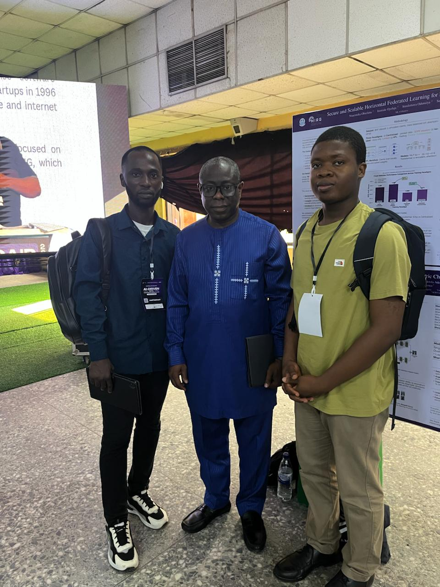

Production AI Architecture
Designed FastAPI, RAG, agent orchestration, SSE workflows, secure auth handoffs, and backend contracts across large AI codebases.
Senior AI Engineer | Data Scientist | Published AI Researcher
I specialize in LLM applications, AI agents, fraud investigation, healthcare AI, computer vision, recommendation systems, and MLOps. My work spans 20+ AI service modules, 60+ API routes, million-user assistants, and peer-reviewed medical AI research.
Recruiter Snapshot
Designed FastAPI, RAG, agent orchestration, SSE workflows, secure auth handoffs, and backend contracts across large AI codebases.
Built LLM-powered fraud investigation workflows with grounded analysis, prompt-injection safeguards, approval classification, and audit-ready reporting.
Delivered healthcare assistants, multimodal clinical agents, RAG over 15,000 documents, and mobile AI support for 50,000+ active users.
Co-authored medical imaging and computer vision research accepted at MICCAI 2025 and ICPR 2026, with arXiv preprints available.
Selected Impact
I bring the rare mix recruiters look for: deep model work, software engineering discipline, product sense, research output, and measurable business results.
Explore full resumeShipped agentic booking flows, fraud investigation assistants, workspace setup automation, Ally and Scout assistants, candidate extraction, fit scoring, interview guides, and production-ready database/API contracts.
Improved clinical Q&A factual accuracy from 78% to 92%, reduced hallucinations by 48%, cut manual chart review by 65%, and supported 20 healthcare deployments.
Served 1,000,000 users, supported 50,000+ conversations per day, trained recommendation models on 120 million interactions, and reduced production latency by 40%.
Beyond the Resume
Recruiters do not only hire bullet points. These moments show Solomon working, speaking, and presenting research in professional spaces.


Featured Work
LLMs | FastAPI | Risk Analysis
LLM-powered investigation workflow for suspicious transactions, secure Q&A, risk assessment, automated repair retries, and case report generation.
Read case studyRAG | Clinical AI | Agents
Domain-specific assistants over clinical knowledge bases, structured records, and medical notes, improving guidance quality and reducing review time.
Read case studyComputer Vision | MICCAI
Structure-aware denoising framework for low-dose pediatric chest X-rays, improving pneumonia classification while preserving diagnostic details.
Read case study